Selamat Datang
Materi 3 membahas Sistem Kontrol Elektronik pada EMS sepeda motor: sensor, ECU/ECM, aktuator, cara kerja pengontrolan EFI, diagnosis, dan perawatan.
Masukan Data
Sensor mengirim informasi kondisi mesin ke ECU/ECM.
Pengolah
ECU/ECM menerima dan menghitung informasi dari sensor.
Pelaksana
Aktuator menjalankan perintah ECU/ECM seperti injektor, koil, dan pompa bensin.
Alur Kontrol EFI
Skema Sistem Kontrol EFI
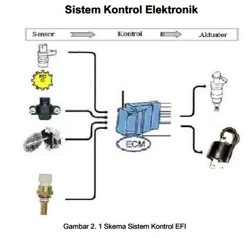
Gambar dari ZIP Materi 3 Bapak.
Rangkaian Sistem Kontrol Elektronik Supra X 125
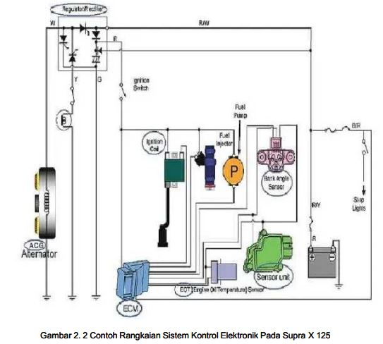
🎬 Video / Animasi Cara Kerja Sistem Kontrol EFI
Animasi PGM-FI menjelaskan hubungan Sensor → ECU/ECM → Aktuator.
Sensor EMS
Sensor yang dibahas: CKP, MAP, TPS, IAT, ECT, EOT, BAS, dan O2.
Crankshaft Position Sensor
Mendeteksi jumlah putaran poros engkol dan menentukan posisi TMA/saat pengapian.
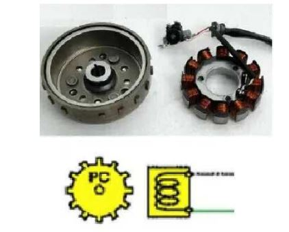
Manifold Absolute Pressure
Mendeteksi tekanan udara pada intake manifold.
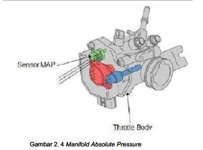
Throttle Position Sensor
Memberikan informasi posisi katup gas kepada ECU.
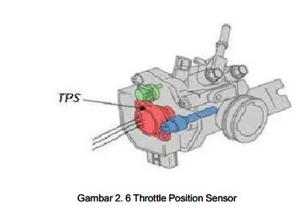
Intake Air Temperature
Mendeteksi suhu udara yang masuk ke intake manifold.
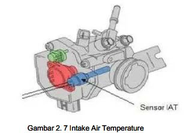
Engine Coolant Temperature
Mendeteksi suhu air pendingin pada engine yang menggunakannya.
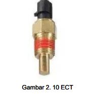
Engine Oil Temperature
Mendeteksi suhu oli mesin.
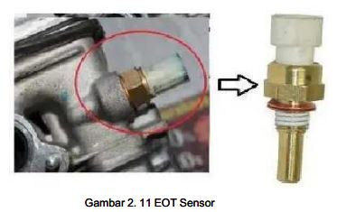
Bank Angle Sensor
Mendeteksi sudut kemiringan kendaraan sebagai pengaman.
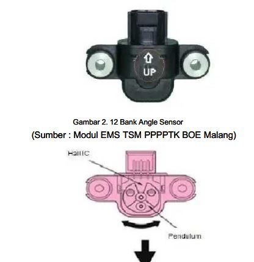
Sensor Gas Buang
Mendeteksi kandungan gas buang untuk sistem closed-loop.
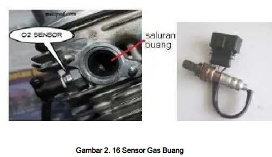
Posisi Sensor pada Throttle Body
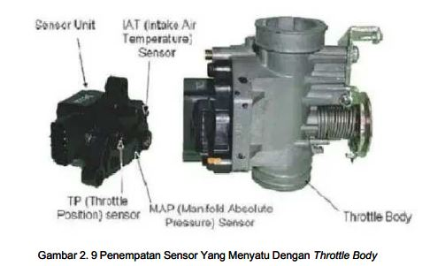
ECU / ECM
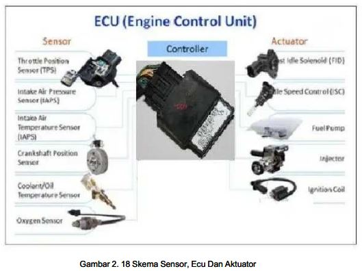
ECU/ECM menerima dan menghitung informasi dari sensor lalu memberikan perintah kepada aktuator.
Simulasi Sinyal
Cara Kerja ECU Mengontrol EFI
Contoh Penyemprotan PGM-FI
2000 RPM
Contoh pada putaran rendah.
4000 RPM
Pada putaran menengah/tinggi, sensor memberikan informasi yang lebih besar kepada ECU/ECM.
Diagnosis & MIL
ECU mendeteksi gangguan sensor/rangkaian dan MIL digunakan untuk menunjukkan kode masalah pada sistem EFI/PGM-FI.
Kode MIL
Contoh prosedur
Putar kunci kontak ke ON, amati kedipan MIL, catat jumlah kedipan, kemudian tentukan penyebab berdasarkan informasi diagnosis pada sistem.
Aktuator
Aktuator menjalankan perintah ECU.
Injector
Aktuator utama untuk menyemprotkan bahan bakar.
Ignition Coil
Koil membangkitkan tegangan tinggi untuk disalurkan ke busi.
Fuel Pump
Pompa bensin bekerja berdasarkan sistem kelistrikan yang dikendalikan sistem EFI.
Perawatan
- Periksa kondisi dan sambungan sensor.
- Jaga konektor tetap bersih dan baik.
- Periksa injektor dan lakukan pembersihan sesuai kebutuhan.
- Gunakan bahan bakar yang sesuai.
- Gunakan prosedur servis sesuai manual.
Galeri Gambar Materi 3
Semua gambar diambil dari ZIP gambar Materi 3 yang Bapak berikan. Klik gambar untuk memperbesar.